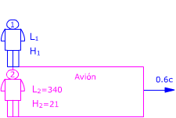

a)  Observador 1 (Suelo): Observador 2 (Avión) Aplicando la conversión de longitudes resulta: $$\begin{aligned} &L_1=\gamma\,L_2\quad,\quad H_1=H_2\\[6pt] &\gamma=\sqrt{1-\left(\frac{v}{c}\right)^{2}}=\sqrt{1-\left(\frac{0{,}6\,c}{c}\right)^{2}}=0{,}8\\[6pt] &L_1=340\ \mathrm{m}\cdot0{,}8=272\ \mathrm{m}\\[6pt] &H_1=21\ \mathrm{m} \end{aligned}$$ El observador 1 ve el avión más corto de lo que lo ve el observador 2 y con la misma altura |